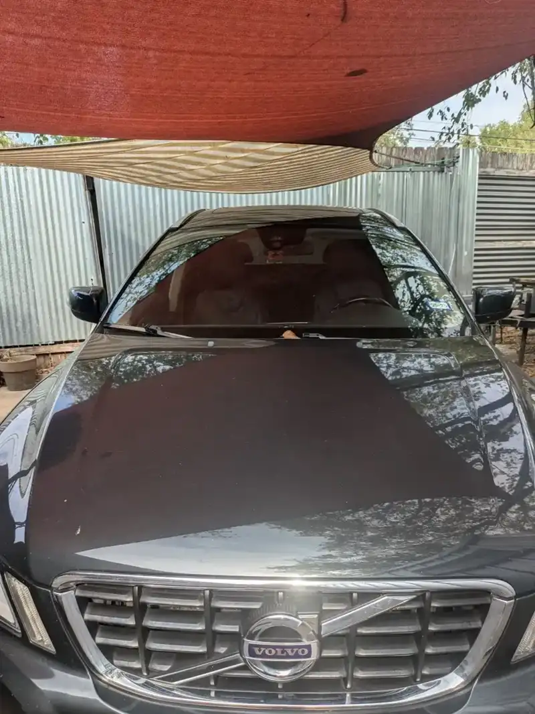
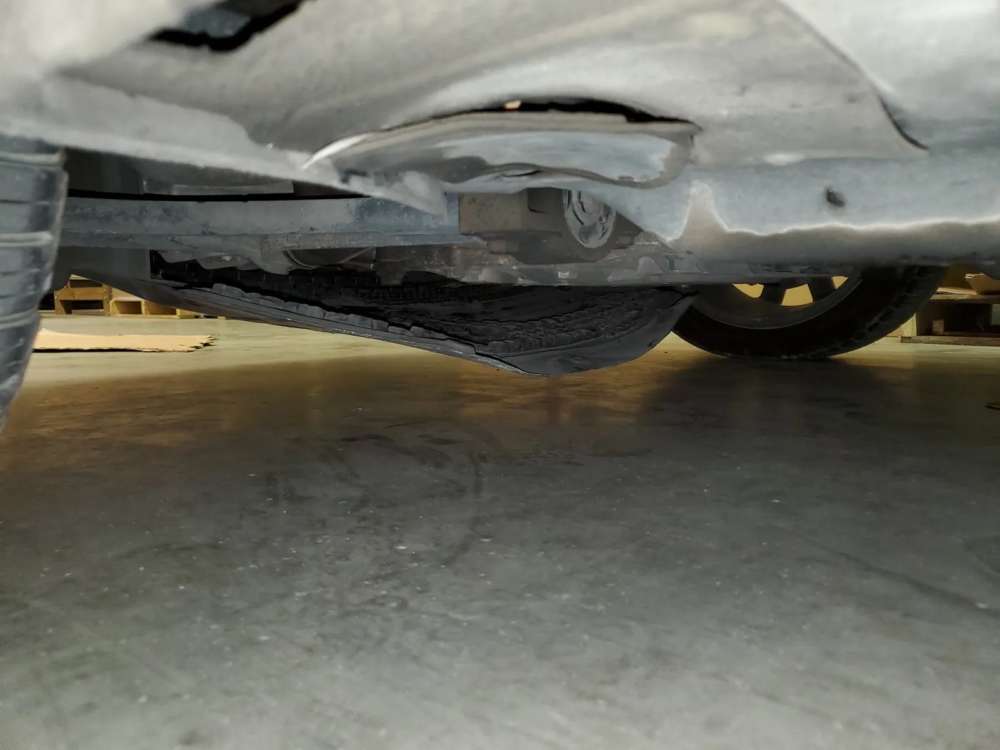
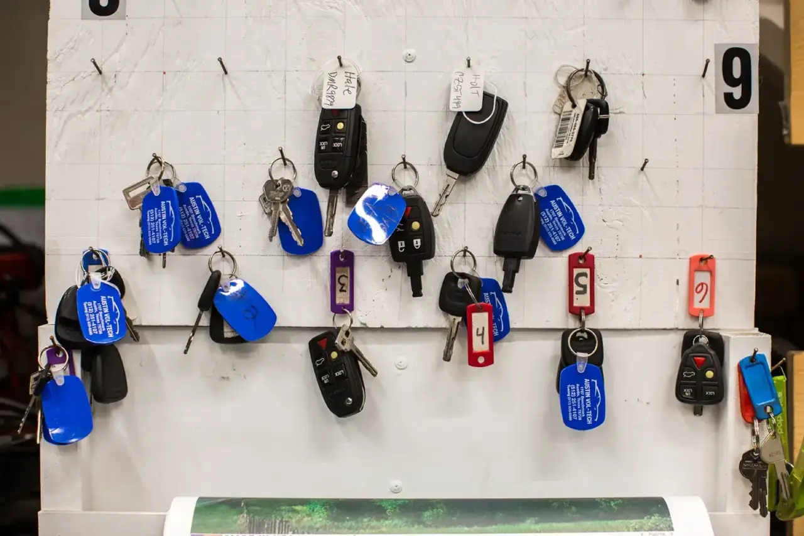

Service and brakes
Routine care that keeps a Volvo running right.
- Oil change
- Brake service
- Tire rotation and alignment

Services
What we work on at the Bench Mark Drive shop.
Routine care that keeps a Volvo running right.

Diagnosis and repair, from wiring faults to the engine itself.

Software updates for Volvos, and the same care for other high-end European makes.

02 / How a visit goes
Set up your appointment by phone.
Tell us what the car is doing. We quote the work.
Back on the road, with the work explained.
Good to know
Volvos first. Other high-end European makes now get the same care.
Yes. ASE and Bosch certified.
Call to set up your appointment, or send a request on the contact page.
Monday to Friday, 7:30 AM to 5:30 PM. Closed Saturday and Sunday.